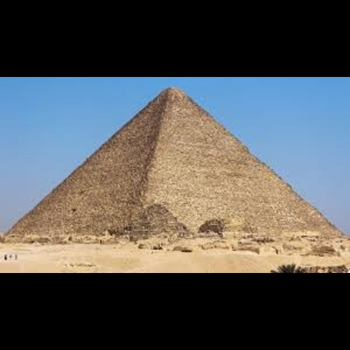
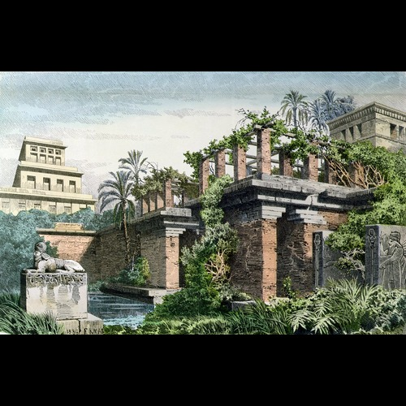
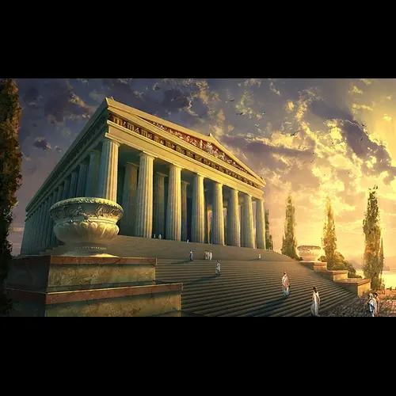
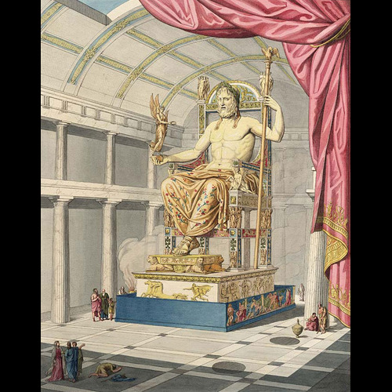
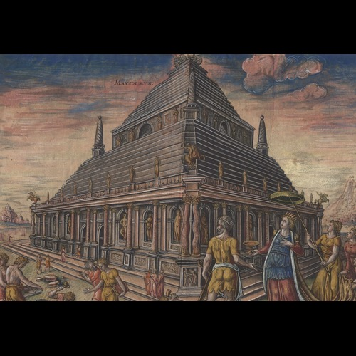
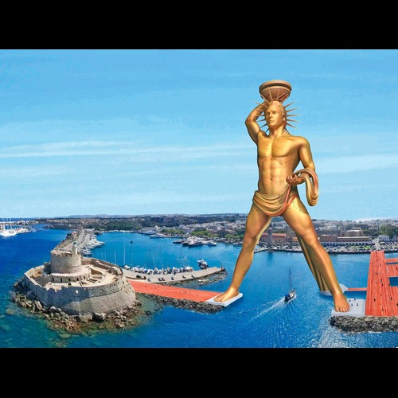
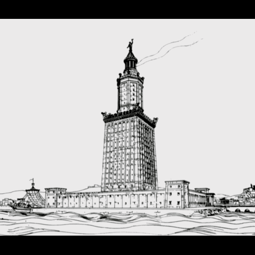

Lista Cudów
- Wielka Piramida w Gizie
- Wiszące Ogrody Babilonu
- Świątynia Artemidy w Efezie
- Posąg Zeusa w Olimpii
- Mauzoleum w Halikarnasie
- Kolos Rodyjski
- Latarnia morska na Faros
Wielka Piramida w Gizie
Jedyny z siedmiu cudów starożytnego świata, który przetrwał do dziś. Powstała jako grobowiec faraona Cheopsa około 2560 roku p.n.e.
Wiszące Ogrody Babilonu
Mityczne ogrody, które według legend były wspaniałym darem Nabuchodonozora II dla swojej żony. Ich istnienie nie zostało jednak potwierdzone archeologicznie.
Świątynia Artemidy w Efezie
Ogromna świątynia dedykowana Artemidzie, jednej z najważniejszych bogiń starożytnej Grecji. Uważana za arcydzieło architektury greckiej.
Posąg Zeusa w Olimpii
Kolosalny posąg przedstawiający Zeusa, boga nieba, wykonany przez Fidiasza. Znajdował się w świątyni w Olimpii, miejscu organizacji starożytnych igrzysk olimpijskich.
Mauzoleum w Halikarnasie
Imponujący grobowiec Mauzolosa, władcy Karii, wzniesiony przez jego żonę i siostrę Artemizję. Jego nazwa dała początek określeniu "mauzoleum".
Kolos Rodyjski
Monumentalny posąg Heliosa, boga słońca, ustawiony przy wejściu do portu na wyspie Rodos. Uważany za symbol zwycięstwa i jedności wyspy.
Latarnia morska na Faros
Jedna z najwyższych budowli starożytnego świata, wzniesiona na wyspie Faros w Aleksandrii. Oświetlała drogę żeglarzom przez wieki.